The slide of the lecture is on the left, the same figure on the right, computed in the browser from the same data. The ▶ button moves the parameter step by step.
Stability under Summation · The Generalised Central Limit Theorem · Parameters and the Characteristic Function · Tails and Moments · Simulation · Estimation · Fitting Real Returns · Critique of the Stable Model: Finite or Infinite Variance
Stability under Summation
Stability in a Simulation
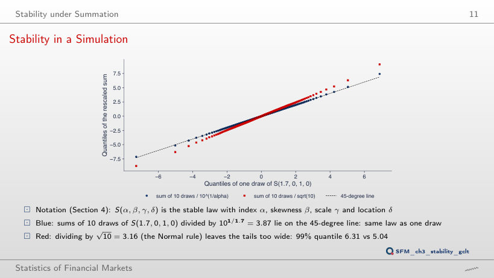
Answer
About 7.27. Divided by 501/1.7 = 9.98, the same sum has a 99% quantile of 5.15, the law of a single draw. The √n rule understates the scale of the sum by the factor n1/α − 1/2, which grows with n: 100.088 = 1.23 and 500.088 = 1.41. With infinite variance, more terms do not bring the sum closer to the rule of the Normal distribution.
Consequences: Horizons and Diversification
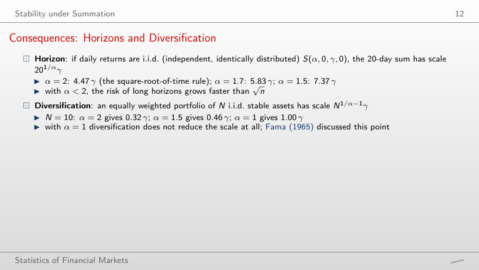
Scale factor of the n-day sum and of the portfolio of N assets (γ = 1)
Worked example: the scale of n-day risk, with the fitted α̂ and γ̂
Answer
2.51 times: 2501/1.5 = 39.69, against √250 = 15.81. The ratio is n1/α − 1/2 = 2501/6, so it grows with the horizon. With α̂ = 1.540 fitted to the S&P 500, the ratio is 1.56 at 20 days and 2.28 at 250 days. For an equally weighted portfolio of N = 10 assets, the scale falls to 0.46γ for α = 1.5, against 0.32γ for the Normal distribution.
The Generalised Central Limit Theorem
The GCLT in a Simulation
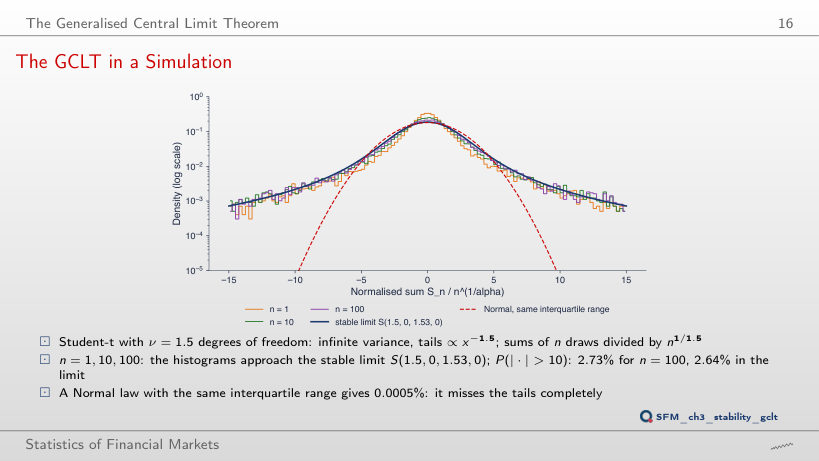
Answer
17.2%, close to 19.2% for the sums with n = 100 and to 21.7% for the stable limit. The same interquartile range makes the bodies of the two laws similar; the difference is far in the tails: at the threshold 10, 0.0005% against 2.73% in the simulation. The ▶ button shows how the ratio grows with the threshold.
Parameters and the Characteristic Function
The Effect of α
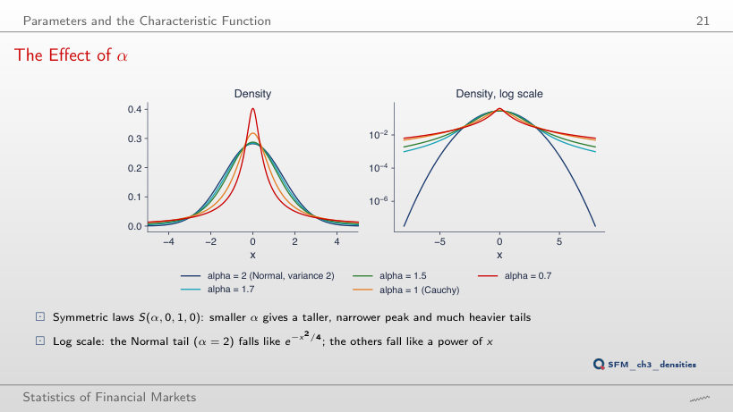
Answer
The density at x = 5. f(0) rises from 0.2821 to 0.2874, by 1.9%, and f(5) rises from 0.000545 to 0.00711, 13 times. On the linear scale the curves look close; the log scale shows that α changes mainly the tails. P(|X| > 5) is 0.041% for α = 2 and 4.14% for α = 1.5.
The Effect of β and γ
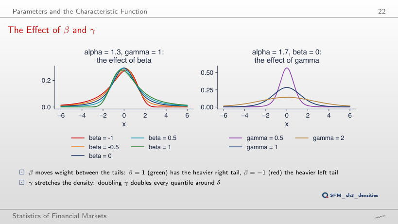
Answer
About 3 times: the ratio is 3.29 at the threshold 10 and tends to (1 + β)/(1 − β) = 1.5/0.5 = 3, from the tail formula P(X > x) ∼ cα(1 + β)x−α and P(X < −x) ∼ cα(1 − β)x−α. At the threshold 3 the probabilities are 10.8% and 3.37%. With β = 1, the left tail falls much faster than x−α.
S1 vs S0 near α = 1
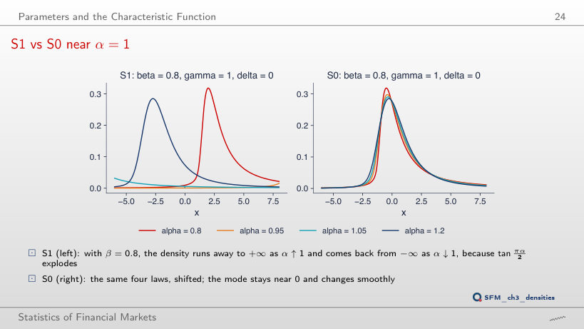
Answer
At about 50.5, far outside the chart. The shift between the two parameterisations is β tan(πα/2) = 0.8 × 63.66 = 50.93, and the mode in S0 is −0.38. At α = 1.01 the tangent changes sign and the mode in S1 moves to about −51. In S0 the mode stays between −0.48 and −0.26 over the whole range.
Normal, Cauchy and Lévy
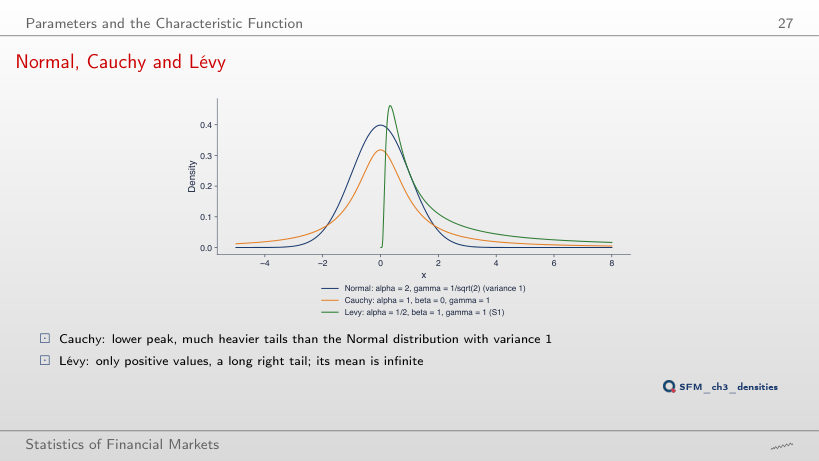
Answer
The Lévy law: 17.7%, against 1.59% for the Cauchy and about 3 × 10−87% for the Normal distribution. The Lévy tail falls as x−1/2 (α = 1/2), the Cauchy tail as x−1. For x = 3 the probabilities are 43.6% (Lévy), 10.2% (Cauchy) and 0.13% (Normal distribution).
Worked Example: S1 vs S0 at t = 1
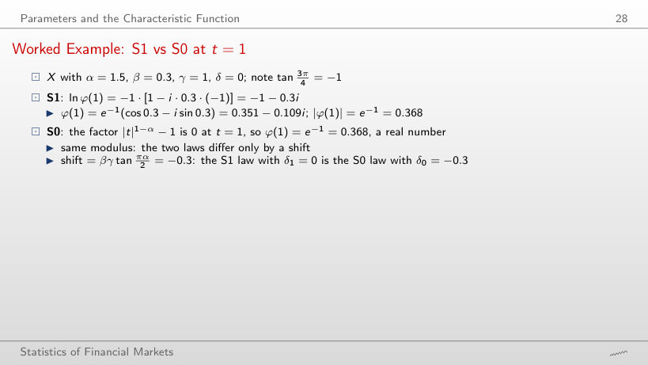
The location gap between S0 and S1
Worked example: φ(t) in S1 and in S0
Answer
For α = 1.1: β tan(πα/2) = 0.3 × (−6.314) = −1.894, against 0.3 × (−0.158) = −0.048 for α = 1.9. The tangent goes to infinity as α approaches 1, which is why the S1 parameterisation moves the density a lot around α = 1 and S0 does not. The modulus |φ(t)| = e−|t|α is the same in both parameterisations; only the argument differs, by a term linear in t.
Tails and Moments
Tails on Log-Log Axes
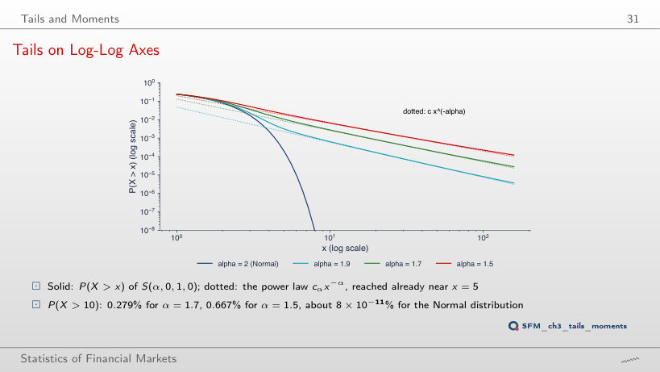
Answer
0.0165%: doubling the threshold divides the probability by about 21.9 = 3.7 (the exact ratio is 0.256, the power law gives 2−1.9 = 0.268). With α close to 2 the tail is still a power law, far from the Normal distribution, for which P(X > 10) is of the order of 10−12.
Instability of the Sample Variance
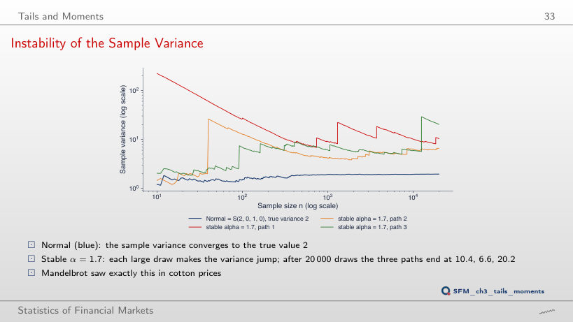
Answer
No: 3.16, 2.62 and 4.12, against 1.96 for the Normal distribution. For any α < 2 the variance is infinite and each large draw makes a jump. With α = 1.95 the final values are 2.46, 2.22 and 2.83; only α = 2 gives 2.00, 1.97 and 1.99. With α = 1.7 (the slide): 10.4, 6.6 and 20.2.
Tail Probabilities: Stable vs Normal
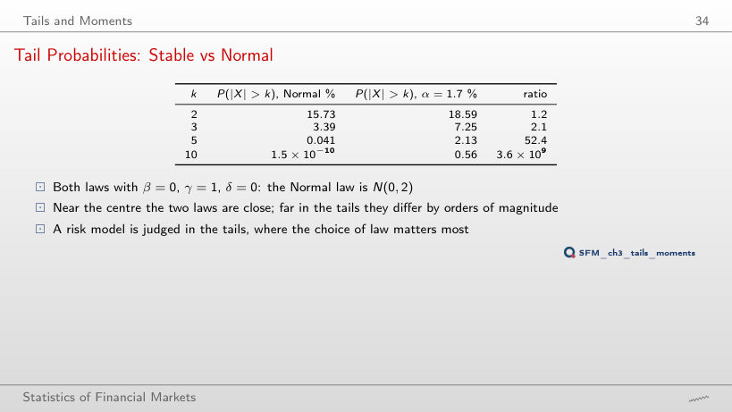
P(|X| > k): the Normal distribution N(0, 2) and the stable law S(α, 0, 1, 0)
Answer
0.52%, that is 94% of the exact value. At k = 20 the approximation gives 0.161% against 0.166% exact (97%), and at k = 2 only 8.1% against 18.6%: the tail formula is asymptotic and becomes accurate far in the tail. The ratio to the Normal distribution N(0, 2) is 1.2 at k = 2 and 3.6 × 109 at k = 10.
Simulation
Worked Example: One Draw Step by Step
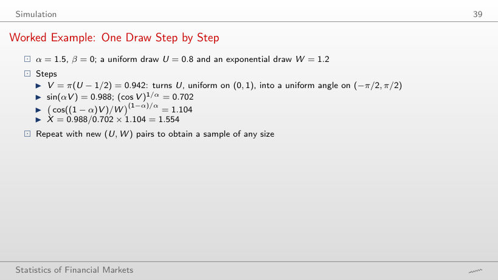
Worked example: one CMS draw from (U, W)
Answer
1.843. For β = 0, W enters only through the factor (cos((1 − α)V)/W)(1 − α)/α; the exponent (1 − α)/α = −1/3 is negative, so X grows in proportion to W1/3: 1.554 × (2/1.2)1/3 = 1.843. A smaller W shrinks the draw: W = 0.5 gives 1.161. For α = 2 the formula becomes 2 sin V √W, a draw from N(0, 2): 1.772 for U = 0.8 and W = 1.2.
CMS Draws against the Exact Density
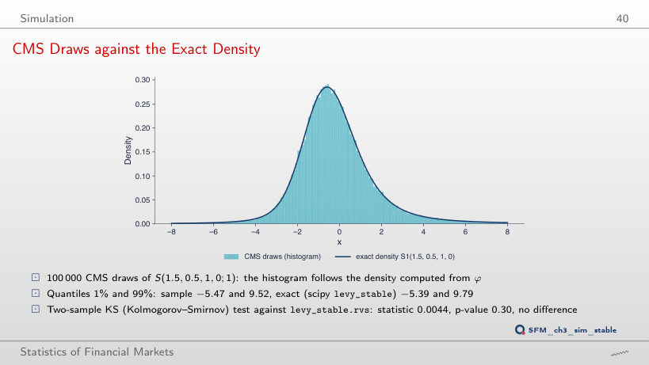
Answer
Mirrored: −9.79 and 5.39 exactly, −9.81 and 5.38 on the FFT grid of the chart (in the simulated sample −9.99 and 5.21). In S1 with δ = 0, the law with −β is the law with β reflected about 0, so β changes which tail is longer, not only the location. The histogram follows the exact density for every combination of α and β.
Estimation
McCulloch's Map from ν_α to α
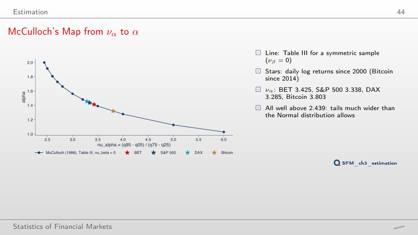
Answer
No, it rises to 1.543: να falls from 3.338 to 3.044. The McCulloch estimator uses only the 5%, 25%, 50%, 75% and 95% quantiles, so the extreme days do not enter the calculation directly; what matters is how wide the 5–95% band is relative to the interquartile range. The DAX goes from 1.455 to 1.590, BET from 1.414 to 1.480, Bitcoin from 1.322 to 1.400.
Worked Example: McCulloch on the BET
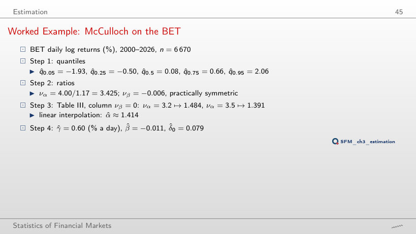
The McCulloch estimator on daily log returns (%)
Worked example: from the quantiles to α̂, β̂, γ̂ and δ̂0
Answer
About 1.53: between να = 3.0 ↦ 1.563 and να = 3.2 ↦ 1.484, linear interpolation gives 1.531, and with |νβ| = 0.036 the result is α̂ = 1.529. A smaller να means a narrower 5–95% band relative to the interquartile range, hence thinner tails and a larger α̂. The Normal distribution has να = 2.439 and α = 2.
McCulloch vs ML in a Monte Carlo Study
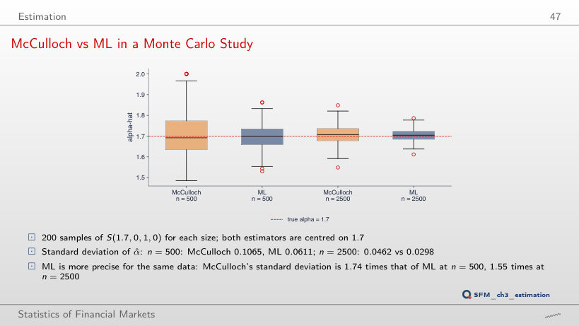
Mean and standard deviation of α̂, α = 1.7
Answer
Yes: from 0.050 to 0.061. The precision of α̂ depends on the sample size n; the number of Monte Carlo samples only determines how well this precision is measured. With 100 samples, the estimated standard deviation still has a relative error of at least 1/√(2 × 100) = 7%. For McCulloch, 0.110 at 100 and 0.107 at 200.
Fitting Real Returns
Stable Fits of Daily Log Returns
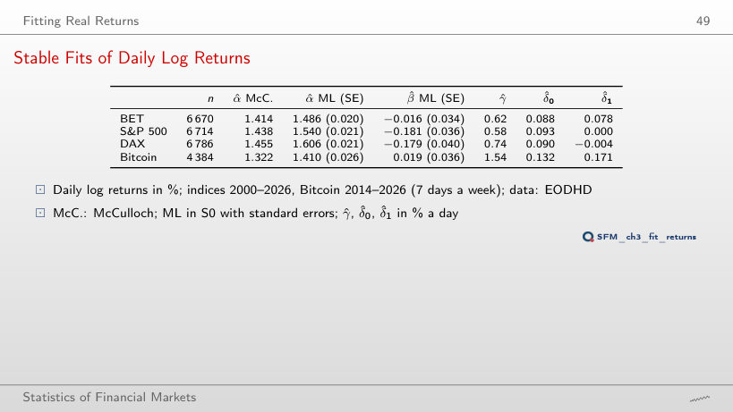
Stable laws (S0) fitted to daily log returns
Worked example: the location from S0 to S1
Answer
For all four. At 99% (±2.576 standard errors) the intervals are BET [1.435, 1.537], S&P 500 [1.486, 1.594], DAX [1.551, 1.661] and Bitcoin [1.343, 1.476], and the McCulloch α̂ is 1.414, 1.438, 1.455 and 1.322. Not even at 99.9% does the conclusion change (Bitcoin: lower bound 1.324). The two methods weigh the tails differently. The intervals are asymptotic and do not include the uncertainty of the McCulloch estimate.
Fitted Densities on a Log Scale
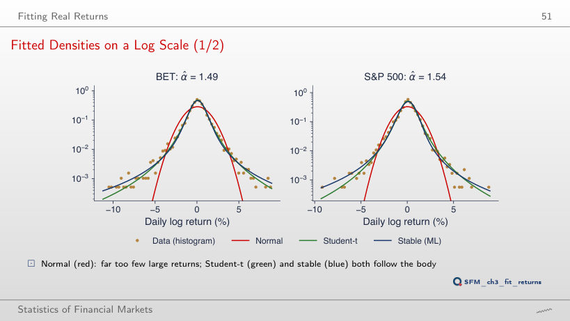
Answer
About 120,000 times: 4.4 × 10−9 against 5.5 × 10−4. The stable density is 1.0 × 10−3, almost twice the Student-t density. The Normal tail falls as e−x²/2, the other two as a power of x, so the ratio grows very fast with |x|.
Fitted Densities on a Log Scale
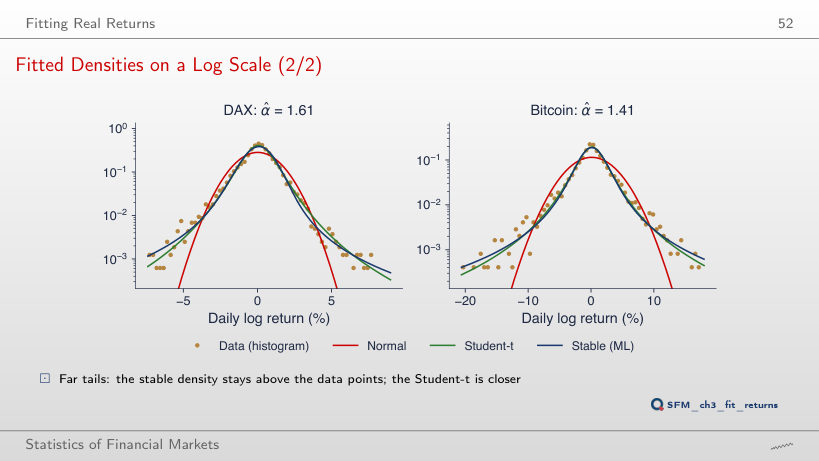
Answer
About 2.9 times: 3.7 × 10−4 against 1.3 × 10−4. The stable tail falls as |x|−α̂−1 with α̂ = 1.61, the Student-t tail as |x|−ν̂−1 with ν̂ = 3.09; a smaller exponent means a heavier tail. The ratio is 1.6 at −5 standard deviations and 3.9 at −10.
QQ Plots against the Three Models
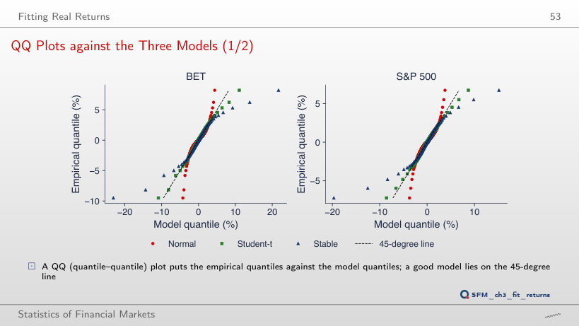
Answer
19.70%, 2.7 times the empirical quantile. The Student-t gives 8.58%, the Normal distribution 3.72%. At p = 1%, the values are 3.45% (data), 4.54% (stable), 3.46% (Student-t) and 2.80% (Normal): the stable law already overstates, but the gap grows as p gets smaller.
QQ Plots against the Three Models
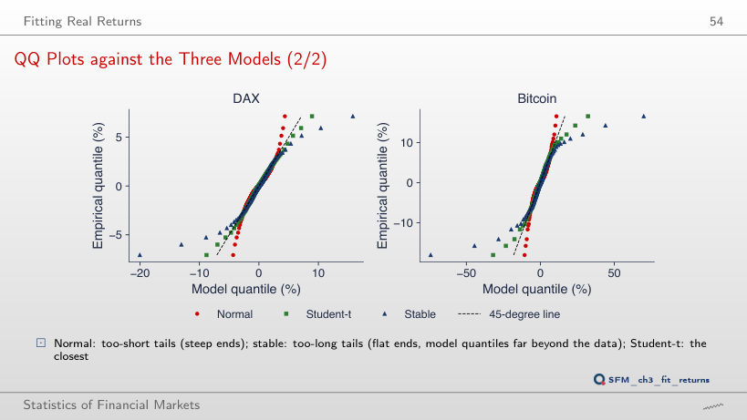
Answer
The Student-t: 11.06%. The stable law gives 14.26%, the Normal distribution 7.99%. At p = 0.1%, the data give 18.05%, the Student-t 31.95% and the stable law 74.16%: the Student-t also overstates the far tail of Bitcoin, but much less than the stable law.
The Left Tail on Log-Log Axes
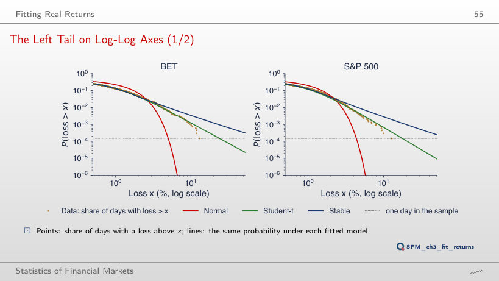
Answer
57.3, 2.5 times as many. The Student-t expects 27.0, the Normal distribution 0.1. For losses above 10%: one day observed, 4.5 under the Student-t and 19.1 under the stable law. The ratio between the days expected by the stable law and those observed grows with the threshold.
The Left Tail on Log-Log Axes
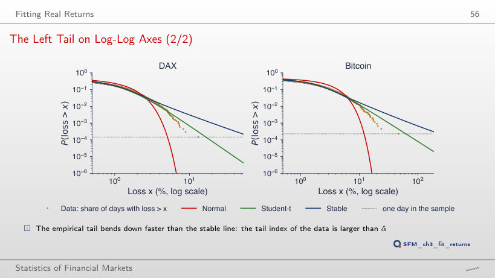
Answer
12.3 under the Student-t and 26.9 under the stable law; the Normal distribution gives practically zero. Both heavy-tailed models overstate the far tail of Bitcoin, the stable law more than 6 times. For losses above 10%: 56 observed, 54.2 (Student-t), 73.9 (stable).
Counting Large Losses
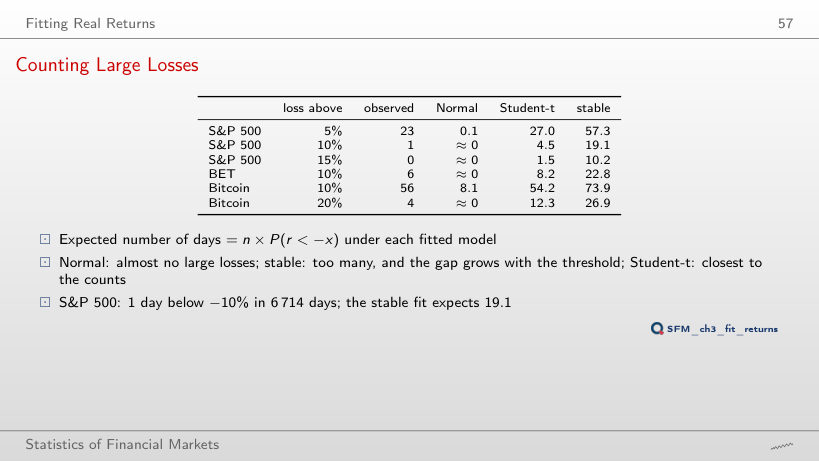
Days with losses above x%: observed and expected (n × P(r < −x)) under each fitted model
Worked example: the power-law tail of the fitted stable law
Answer
18.3 days, 96% of the exact value: c1.540 = 0.1868, P ≈ 0.1868 × 1.181 × 17.33−1.540 = 0.00273. The factor 1 − β̂ = 1.181 comes from β̂ = −0.181: the left tail of the fitted law is heavier than the right one. Observed: a single day. For Bitcoin at 10%, the approximation gives 68.2 days, against 73.9 exact and 56 observed.
VaR 1% and VaR 0.1% under the Three Models
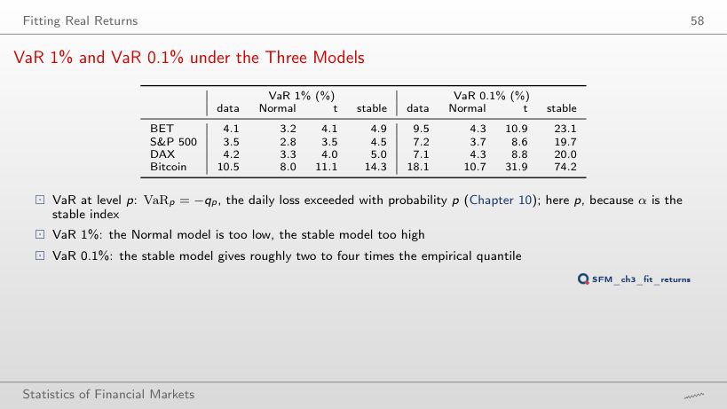
VaRp = −qp from the data and from the three fitted models (% a day)
Worked example: VaR from the fitted stable law and from the Normal distribution
Answer
About 7.9: 31.21% against 3.97%. The ratio grows as p falls, because the quantile of the stable law grows like p−1/α and the Normal one only like √(2 ln(1/p)). The empirical quantile at 0.05% is 9.31%, so the stable law exceeds the data 3.4 times. At 5% the stable/Normal ratio is 0.91: in the body of the distribution, the stable law gives a smaller VaR.
Comparison of the Three Models
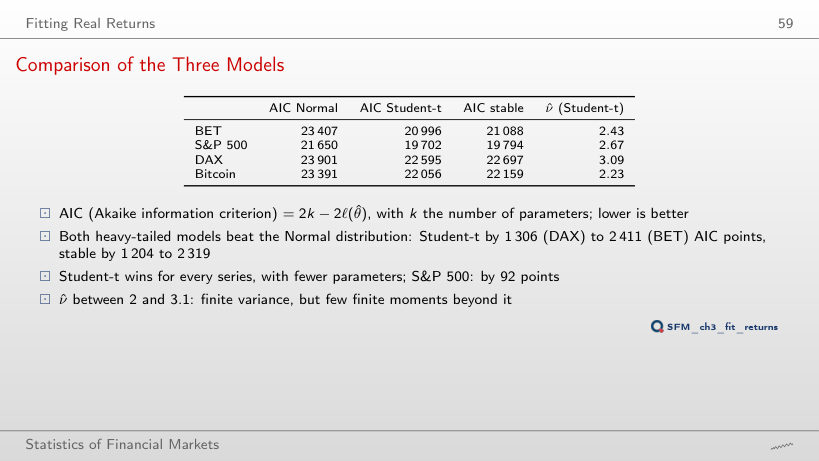
Information criteria of the three fitted models
Answer
98.4 points. The stable law has one more parameter (4 against 3), and BIC penalises it by ln 6,714 = 8.81 instead of 2: 91.6 + 6.8 = 98.4. The conclusion does not change. Against the Normal distribution, the AIC gains of the Student-t lie between 1,306 (DAX) and 2,411 (BET) points, those of the stable law between 1,204 and 2,319, as on the slide.
Critique of the Stable Model: Finite or Infinite Variance
Test 1: Stability of α under Aggregation
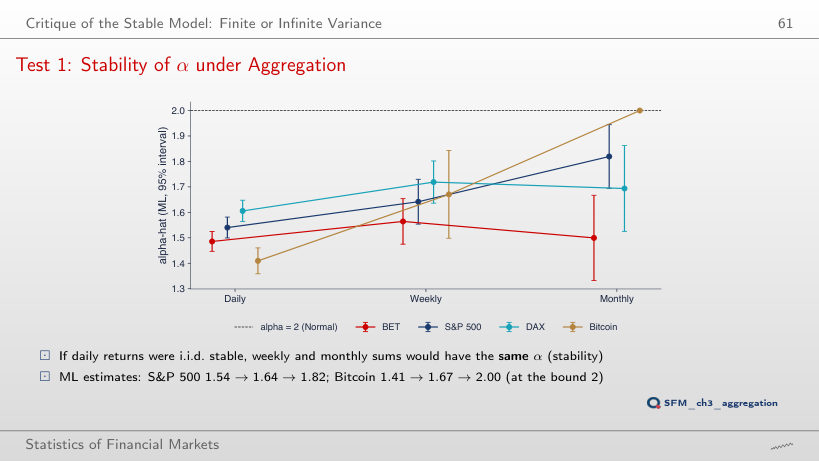
Answer
No. At 99% (±2.576 standard errors), the daily interval is [1.486, 1.594] and the monthly one [1.655, 1.984]. Not even at 99.9% (±3.29 standard errors) do they overlap, although the gap between them almost vanishes. For the DAX and BET the intervals already overlap at 95%. The intervals are asymptotic, and the monthly one rests on 321 months.
Test 2: Convergence of the Sample Variance
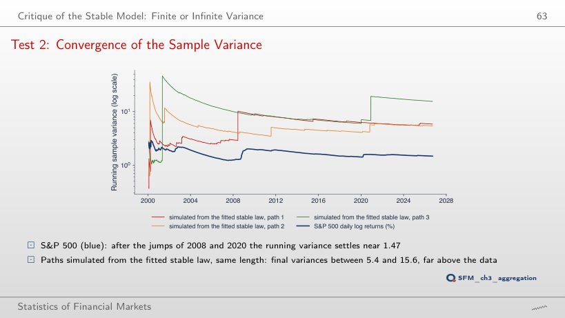
Answer
Much higher: 252.1, 111.4 and 52.6, 4 to 21 times the variance of the data. The same holds for the S&P 500 (the slide): data 1.47, paths 5.9, 5.4 and 15.6. A stable law with α̂ < 2 produces extremes that the real series do not have, and their sample variance does not settle.
Daily log returns, in %: BET, S&P 500 and DAX from January 2000, Bitcoin from September 2014 (7 days a week), to 18 September 2026. EODHD closing prices. The fitted laws are those of the lecture: the Normal distribution, the Student-t and the stable law fitted by maximum likelihood in the S0 parameterisation.